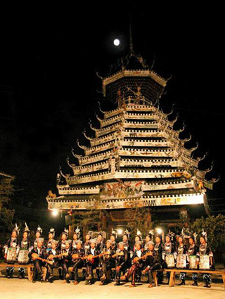

三江侗族自治县，多彩非遗引客来


近年来，三江侗族自治县依托楼桥、纺纱、百家宴、歌舞等丰富多彩、独具特色的非遗资源优势，通过“扶贫+旅游”模式，走出一条精准扶贫脱贫之路。2017年1至8月，全县接待游客达610.2万人次。
“非遗”的重要特性是活态传承，主要依靠传承人的言传身教，离开了传承人的口传心授，国家珍贵的“非遗”就无法世代传承。随着时代的变迁，社会发展步伐的加快，“非遗”项目受到了前所未有的巨大冲击，有的面临着后继乏人或后继无人甚至逐步濒临绝迹的困境，所以其传承备受国内外关注。
多年来，三江县高度重视传承保护并挖掘非物质文化遗产项目，先后建成了国家重点博物馆之一三江侗族博物馆，“馆村结合”的三江侗族生态博物馆，还建立了侗族大歌、侗族百家宴、侗族农民画、侗族刺绣”、侗戏等数个保护非物质文化遗产的传承基地，“非遗”保护与传承取得非常显著的成绩。据悉，柳州市目前拥有自治区级“非遗”项目传承人23人，其中三江县13人；已进入国家级 “非遗”名录大雅之堂的仅有3人，他们全部是三江县人，分别是侗族木构建筑营造技艺传承人代表杨似玉、侗族大歌传承人代表吴光祖和覃奶号。三江侗乡省级以上“非遗”项目及其传承人，已然占据了柳州市的半壁江山，在区内也屈指可数。